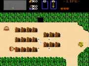

|

Review

Game Type: Overhead view adventure
Remember, an "adventure" game isn't the same as a turn-based RPG. In an
RPG actions are chosen from a menu. While action/adventure games have you
hunt for treasures and solve puzzles like RPGs, adventure games are controlled
by the player in real time. Zelda basically defines the adventure category by
itself.
Gameplay: 95/100
Move your character around in 4 directions, swing a sword, throw a
boomerang, deflect a shot with your shield. While being limited to 4
directions of movement may sound like it would ruin the gameplay, perhaps it
strengthens it. The controls are rock-solid, and you'll fully appreciate them
when you're in a room full of armored knights that you can only strike from
behind or dodging a barrage of fireballs. The game plays so well that I think
Zelda is the best (excuse the term) Zelda-style game I've ever played.
This game should keep you busy for a while, too. The first quest is a little
tricky to beat without ever consulting a hint book, but the dungeons in the
second are so tough and everything is so well hidden that you may never beat
it without help.
Graphics: 50/100
Very simplistic. The "forests" look like nothing but a bunch of individual
bushes. The dungeons all have the exact same graphics, rearranged into
different mazes. Anyone who wasn't reared on a NES will be horrified at first.
But the graphics have a very clean look. Everything you need to see is highly
visible. The main character is well animated. The visuals do the job, and once you're
hooked you don't notice them.
Sound: 80/100
Sound effects are unremarkable, but the music... while there are only
three or four scores in the entire game, they are so incredibly catchy that
you can listen to them over and over. (A good thing, since you'll often go
10 to 20 minutes listening to the same one.)
Overall: 95/100
Primitive, I admit, but the game plays so well that it's an undeniable
classic. Looking for an education in videogame lore? You better play Tetris,
and you better play this.
Codes
- Skip to Second Quest
- Start a new file and enter your name as "Zelda". That character will
immediately have access to the second quest.
- Skip to Save Menu
- During a game, enter the submenu and press U and A on Controller 2. This
will let you save your game without adding to your games lost counter.
|